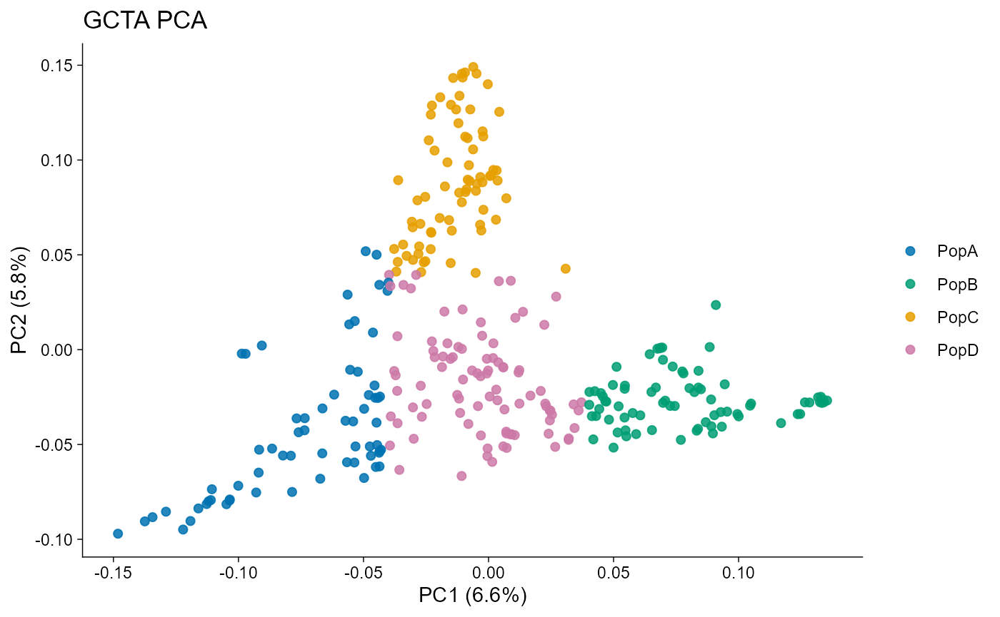
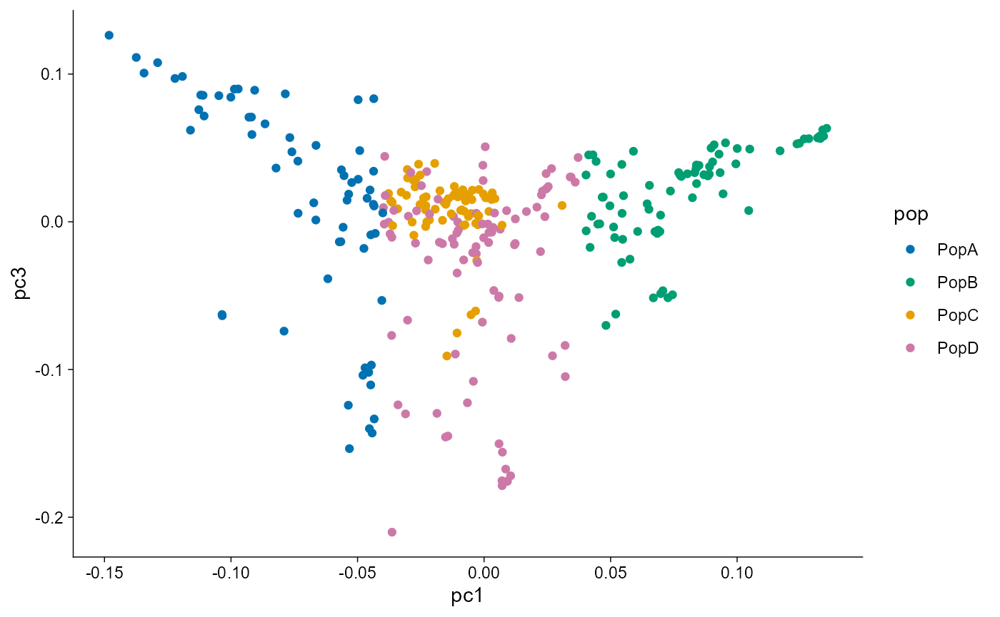
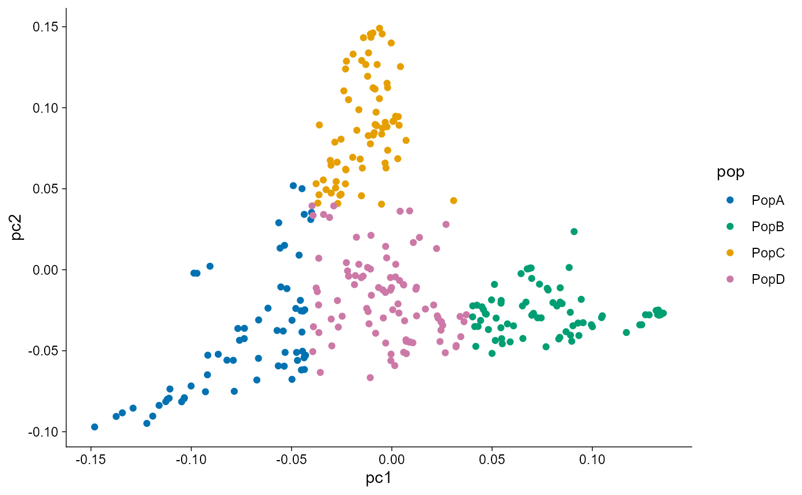
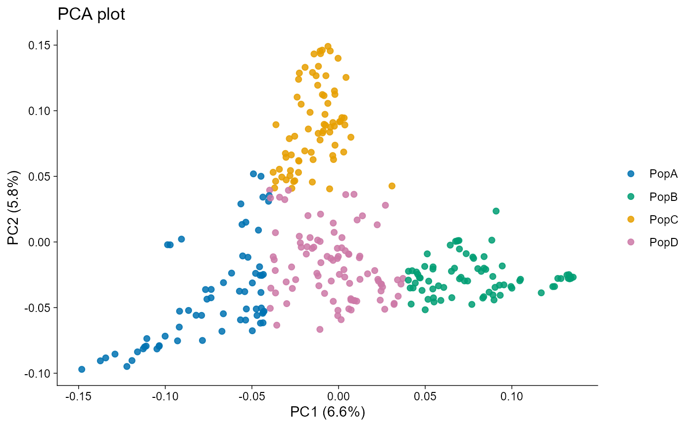

PCA plots
pca.Rmdggpop reads PLINK and GCTA PCA output into a typed
ggpop_pca object. The same object supports
plot_pca() and the layered
ggpop() + geom_pca() style.
API summary
| Task | API | Notes |
|---|---|---|
| Import PLINK/GCTA PCA | import_pca(file, type = ..., eigenval = NULL, pop_group = NULL) |
Returns ggpop_pca
|
| Direct plot | plot_pca(data, pc_x = 1, pc_y = 2) |
Returns ggplot
|
| Layered plot | ggpop(data) + geom_pca(pc_x = 1, pc_y = 2) |
Tidy ggplot extension path |
| Compute PCA | compute_pca(genotype, method = "flashpca") |
Requires flashpcaR
|
GCTA PCA
pca <- import_pca(
ggpop_extdata("pca", "gcta.eigenvec"),
type = "gcta",
eigenval = ggpop_extdata("pca", "gcta.eigenval"),
pop_group = ggpop_extdata("pop_group.txt")
)
plot_pca(pca, title = "GCTA PCA")

When the imported object has a pop column, both plotting
routes map population groups to the unified ggpop discrete colour
scale.

PC labels
The axis labels can carry variance explained when eigenvalues are available.
plot_pca(pca, pc_x = 1, pc_y = 2)
Optional flashpcaR computation
compute_pca(method = "flashpca") is available when
flashpcaR is installed. It is intentionally not forced
during vignette build because it depends on a genotype object.
compute_pca(genotype, method = "flashpca")